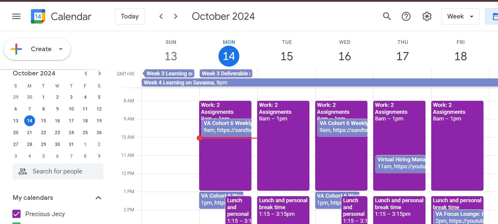
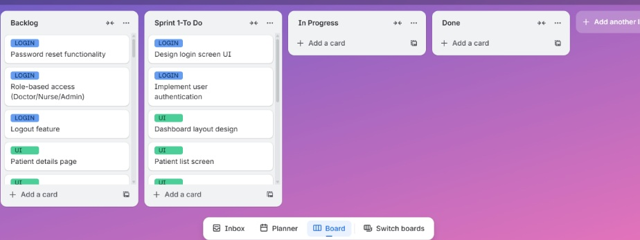
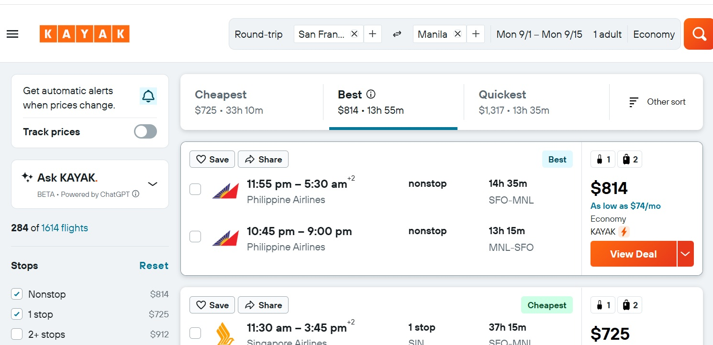
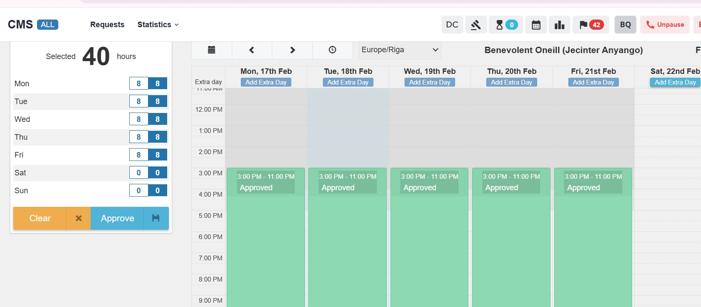
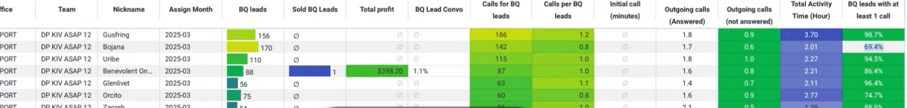
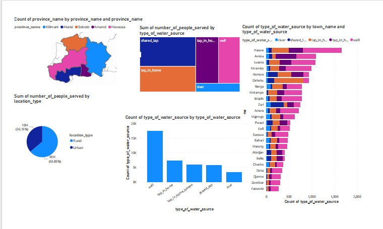
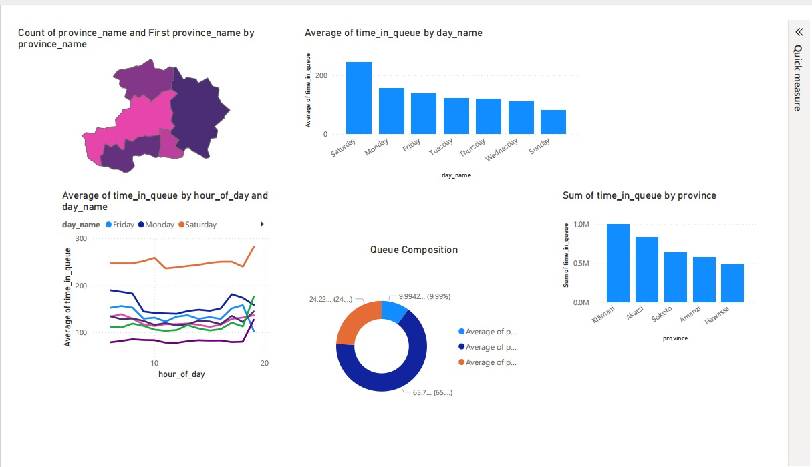

Executive & Administrative Support
Calendar and inbox management, scheduling, document organization, reminders, meeting coordination and day to day executive support.
EXECUTIVE VIRTUAL ASSISTANT | ADMINISTRATIVE SUPPORT
Reliable remote support for busy founders, executives and growing teams. I help manage calendars, follow ups, projects, research, client communication and the details that keep work on track.
ABOUT ME
I’m Jecinter Anyango, an Executive Virtual Assistant with experience supporting clients and remote teams with calendar and inbox management, scheduling, research, documentation, data entry, CRM updates, customer communication and task follow ups.
My background in data and research is an added advantage. I’m comfortable working with spreadsheets, validating information, preparing reports and turning scattered information into something clear and useful. I enjoy creating order behind the scenes so the people I support can focus on decisions, clients and growth.
HOW I CAN HELP
Calendar and inbox management, scheduling, document organization, reminders, meeting coordination and day to day executive support.
Task tracking, deadline follow up, project boards, action items, team coordination and keeping priorities visible.
Online research, structured briefs, data collection, comparison tables, summaries and clear reports for decision making.
Professional communication, follow ups, CRM updates, issue resolution, appointment coordination and accurate records.
Flight research, itinerary comparison, booking support, schedule coordination and travel related follow up.
Spreadsheet management, data validation, reporting, dashboards and practical workflow improvements for repetitive administrative tasks.
SELECTED WORK
Structured a busy weekly schedule using time blocks for focused work, meetings, learning commitments and personal breaks. This approach keeps priorities visible and helps reduce scheduling conflicts.

Organized project work into clear stages including backlog, sprint tasks, work in progress and completed items, making priorities and progress easier to track.

Supported customers through travel research, itinerary comparison, quotation and follow up while working within ASAP Tickets and Dreamport systems. The work strengthened the coordination, communication and attention to detail I bring to executive support.


A dated performance snapshot from my travel support work demonstrates consistent customer outreach, follow up and record management.
Performance is shown under my work nickname, Benevolent Oneill. Figures are a dated snapshot from the March 2025 report.

Built visual reports from structured datasets to make trends and patterns easier to understand. This analytical skill is an additional advantage when executives need clear information rather than raw spreadsheets.


EXPERIENCE
SnappyCX | Sustain, LLC | Remote
Reviewed, validated and standardized structured data while maintaining accuracy, consistency and quality control requirements.Upwork & Contract Roles | Remote
Supported calendar and inbox management, scheduling, document organization, research, spreadsheets, CRM updates and task follow ups.ASAP Tickets | Dreamport
Managed customer inquiries, flight research, booking changes, payments, follow ups and accurate customer records.TESTIMONIAL
“Jecinter consistently demonstrated impressive responsiveness, punctuality, and attention to detail, tackling every task with diligence and professionalism. I truly appreciated how seamlessly she adapted to new responsibilities, requiring minimal oversight and quickly becoming a reliable contributor to our team.”
Stephanie Schnovel
Sustain Environmental
Contact Stephanie for a reference
TOOLS
Google Workspace · Microsoft Office · Google Calendar · Calendly
Trello · Notion · Asana · monday.com
HubSpot · Zendesk · Zoho CRM · Ticketing systems
Slack · Zoom · Microsoft Teams · Google Meet · WhatsApp
Excel · Google Sheets · Power BI · SQL · Python · Tableau
Canva · ChatGPT · AI assisted research and workflow support
LET'S WORK TOGETHER
I can help you stay organized, keep priorities moving and take care of the administrative details competing for your attention.
Nairobi, Kenya | Remote worldwide